Mashed Sweet Potato
Age: 5-12 months
A simple mashed sweet potato,
perfect for babies starting on solid foods.
process:
1 small sweet potato
Water or breastmilk/formula
Nutritional Benefits:
Vitamin A for eye health.
Fiber for better digestion.
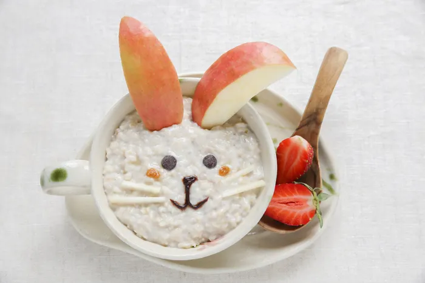
rice cereal
Age: 5-12 months
Ingredients:
2 tbsp rice (soaked for 30 minutes)
1 cup water
Breast milk/formula (optional).
Process:
Wash and soak the rice.
Boil rice with water until soft.
Blend it to a smooth consistency.
Add breast milk/formula if needed.
Nutritional Benefits:
Rich in carbohydrates for energy.
Easily digestible and suitable for babies transitioning to solids.
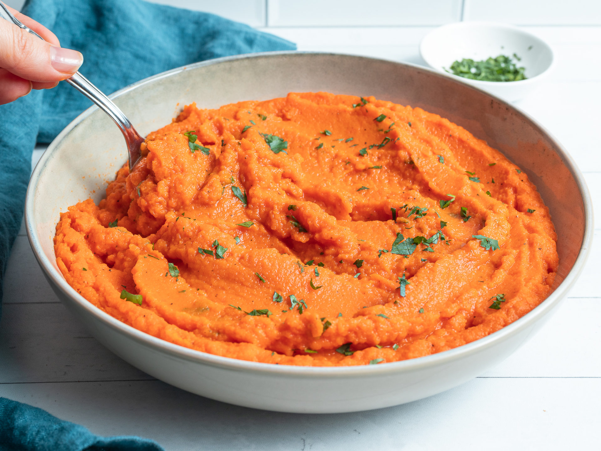
mashed carrot
Age: 5-12 months
Ingredients:
1 medium carrot
Water for boiling
Process:
Peel and chop the carrot.
Steam/boil until soft.
Mash it to a smooth consistency.
Add water if necessary to make it thinner
Nutritional Benefits:
High-quality protein from paneer for muscle growth.
Calcium for strong bones and teeth.
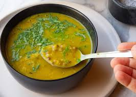
Moong Dal Soup
Age: 5-12 months
Ingredients:
2 tbsp yellow moong dal
1 pinch turmeric
1 cup water
Process:
Wash and soak the moong dal for 15 minutes.
Boil the dal with water and turmeric until soft.
Strain or mash the dal to a soup-like consistency.
Serve warm.
Nutritional Benefits:
Protein for muscle growth.
Iron for cognitive development.
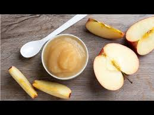
Apple Puree
Age: 5-12 months
Ingredients:
1 apple
Water
Process:
Peel, core, and chop the apple into small pieces.
Steam or boil the apple until soft.
Puree the apple until smooth, adding water if necessary.
Nutritional Benefits:
Vitamin C for immunity.
Fiber for better digestion.
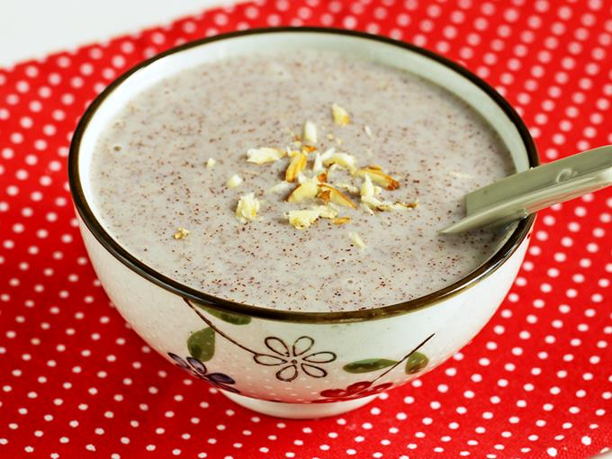
ragi java
Age: 5-12 months
Ingredients:
2 tbsp Ragi flour
2 cups Water
1-2 tbsp Jaggery (or sugar)
1/2 cup Milk (optional)
A pinch of Cardamom powder (optional)
Process:
Mix ragi flour with 1/4 cup water to make a smooth paste.
Boil 1.5 cups of water, then stir in the ragi paste.
Cook for 5-7 minutes until thick.
Add jaggery and cardamom (optional), stir until dissolved.
Add milk and ghee (optional) for a creamier version.
Serve hot.
Nutritional Benefits:
High calcium (for bones)
Good fiber (for digestion)
Iron (boosts blood health)
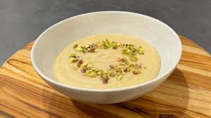
Suji (Semolina) Kheer
Age: 5-12 months
Ingredients:
2 tbsp suji (semolina)
1 cup water
1/2 tsp ghee
1 tsp jaggery (optional for sweetness)
Process:
Heat ghee in a pan and roast the suji until golden brown.
Add water and cook until the suji absorbs all the water.
Add jaggery if needed, and stir until dissolved.
Nutritional Benefits:
Carbohydrates for energy.
Healthy fats from ghee for brain development
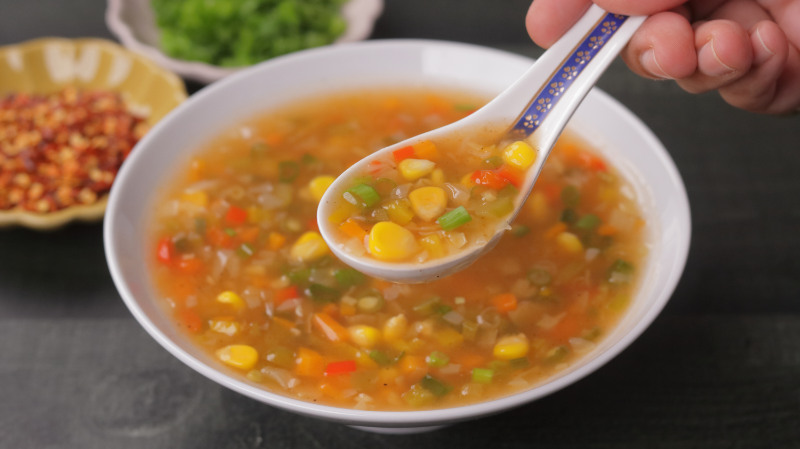
Mixed Vegetable Soup
Age: 5-12 months
Ingredients:
1 small carrot
1 small potato
1/4 cup peas
1/2 cup water
Process:
Wash, peel, and chop the vegetables.
Boil the vegetables in water until soft.
Blend or mash the vegetables into a smooth soup.
Strain if necessary and serve warm.
Nutritional Benefits:
Vitamins and minerals from vegetables for overall growth.
Fiber for healthy digestion.
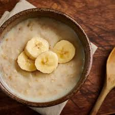
Oats Porridge
Age: 5-12 months
Ingredients:
2 tbsp oats
1 cup water
1/2 cup milk (optional)
Process:
Add oats to boiling water and cook until soft.
Blend the cooked oats to make them smoother, if needed.
Add milk for a creamier texture and serve warm.
Nutritional Benefits:
Fiber for digestive health.
Carbohydrates for energy.
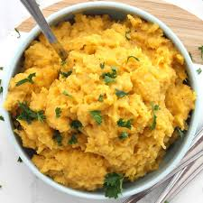
Steamed Pumpkin with Cinnamon
Age: 5-12 months
Ingredients:
1 small pumpkin (peeled and chopped)
A pinch of cinnamon
Process:
Steam the pumpkin pieces until soft.
Mash the steamed pumpkin and sprinkle a small pinch of cinnamon.
Serve warm.
Nutritional Benefits:
Vitamin A for eye health.
Antioxidants for immunity.
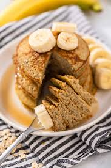
Banana Oat Pancakes
Age: 1-3 years
Ingredients:
1 ripe banana
1 egg
¼ cup rol
led oats
A pinch of cinnamon
A splash of milk (optional)
Process:
Mash the banana in a bowl.
Add the egg and oats, and mix until combined. Add a splash of milk if the batter is too thick.
Heat a non-stick pan over medium heat and pour small portions of the batter.
Cook each side for about 2 minutes, until golden brown.
Nutritional Benefits:
Bananas: Potassium, Vitamin C, and fiber.
Oats: Fiber, iron, and magnesium.
Eggs: Protein, Vitamin D, and healthy fats.
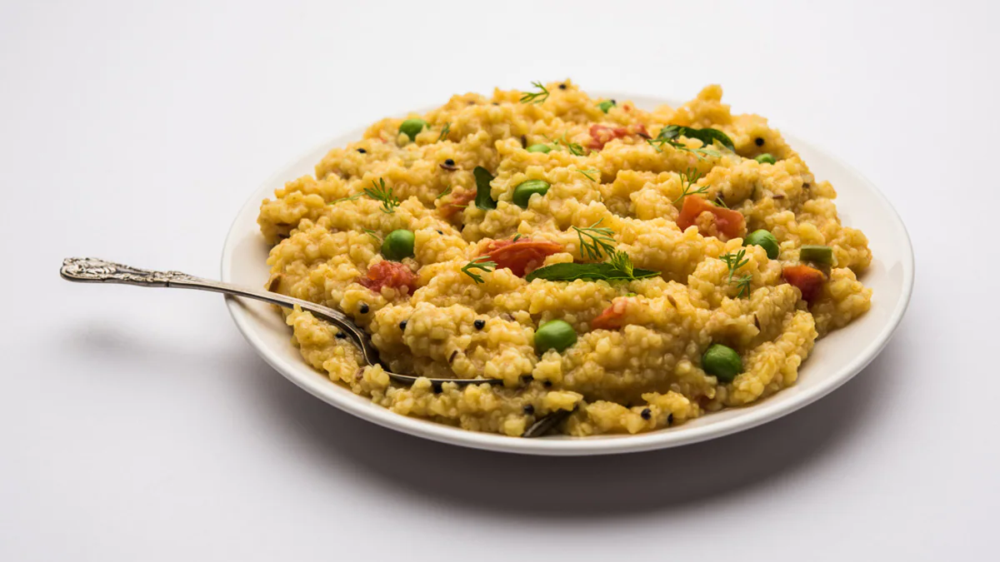
Vegetable Khichdi
Age: 1-3 years
Ingredients:
¼ cup rice
¼ cup yellow lentils (moong dal)
½ carrot (chopped)
½ potato (chopped)
A pinch of turmeric
A pinch of cumin seeds
1 teaspoon ghee (clarified butter)
Water as needed
Process:
Rinse the rice and lentils.
In a pressure cooker, heat ghee and add cumin seeds and turmeric.
Add the chopped vegetables, rice, and lentils.
Add 1 cup of water and cook for 3-4 whistles.
Mash lightly with a spoon and serve warm.
Nutritional Benefits:
Lentils: Protein, iron, and fiber.
Rice: Carbohydrates and B-vitamins.
Vegetables: Vitamins A and C, and fiber
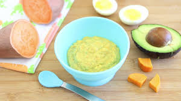
Avocado and Sweet Potato Mash
Age: 1-3 years
Ingredients:
1 small sweet potato
½ ripe avocado
Process:
Steam or boil the sweet potato until soft.
Mash the sweet potato with a fork.
Mix in mashed avocado and serve.
Nutritional Benefits:
Sweet Potatoes: Vitamin A, fiber, and potassium.
Avocados: Healthy fats, Vitamin E, and folate.
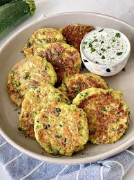
Mini Veggie Patties
Age: 1-3 years
Ingredients:
1 small potato (boiled and mashed)
¼ cup grated carrot
¼ cup finely chopped sp
inach
2 tablespoons breadcrumbs
1 tablespoon grated cheese (optional)
A pinch of salt
Process:
In a bowl, mix mashed potatoes, carrot, spinach, breadcrumbs, and cheese.
Form small patties from the mixture.
Heat a little oil in a non-stick pan and cook the patties on both sides until golden brown.
Nutritional Benefits:
Potatoes: Carbohydrates and Vitamin C.
Spinach: Iron, folate, and fiber.
Carrots: Vitamin A and fiber.
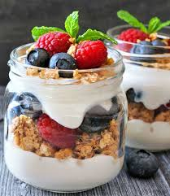
Fruit Yogurt Parfait
Age: 1-3 years
Ingredients:
½ cup plain whole milk yogurt
½ banana (sliced)
¼ cup berries (blueberries or strawberries)
1 tablespoon crushed nuts (almonds, walnuts) – optional
Process:
Layer yogurt, bananas, and berries in a small bowl or cup.
Sprinkle nuts on top if desired and serve.
Nutritional Benefits:
Yogurt: Calcium, probiotics, and protein.
Bananas & Berries: Vitamins C, fiber, and antioxidants.
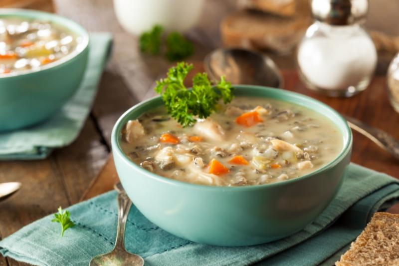
Chicken and Vegetable Soup
Age: 1-3 years
Ingredients:
50g chicken breast (finely chopped)
1 small carrot (chopped)
¼ cup peas
¼ small onion (chopped)
1 garlic clove (minced)
1 teaspoon olive oil
1½ cups water or chicken broth
Process:
Heat olive oil in a pot and sauté onion and garlic.
Add chicken and cook until it turns white.
Add carrots, peas, and broth. Simmer for 15-20 minutes until the vegetables are soft.
Mash the vegetables slightly or blend for a smoother consistency.
Nutritional Benefits:
Chicken: Protein and B-vitamins.
Vegetables: Vitamins A and C, fiber
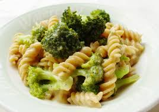
Cheesy Broccoli Pasta
Age: 1-3 years
Ingredients:
¼ cup small pasta (e.g., macaroni)
¼ cup broccoli florets (finely chopped)
1 tablespoon grated cheese
1 teaspoon butter
Process:
Cook the pasta according to package instructions.
Steam the broccoli until soft.
Drain the pasta, and add broccoli, cheese, and butter. Stir until the cheese melts.
Nutritional Benefits:
Pasta: Carbohydrates and B-vitamins.
Broccoli: Vitamin C, calcium, and fiber.
Cheese: Calcium and protein.
Spinach and Cheese Quesadilla
Age: 1-3 years
Ingredients:
1 small whole wheat tortilla
¼ cup spinach (chopped)
2 tablespoons grated cheese
1 teaspoon butter
Process:
Heat butter in a pan and sauté the spinach until wilted.
Place the spinach and cheese on one half of the tortilla.
Fold the tortilla and cook on both sides in a pan until golden brown and the cheese melts.
Nutritional Benefits:
Spinach: Iron, folate, and fiber.
Cheese: Calcium and protein.
Whole Wheat Tortilla: Fiber and B-vitamins.
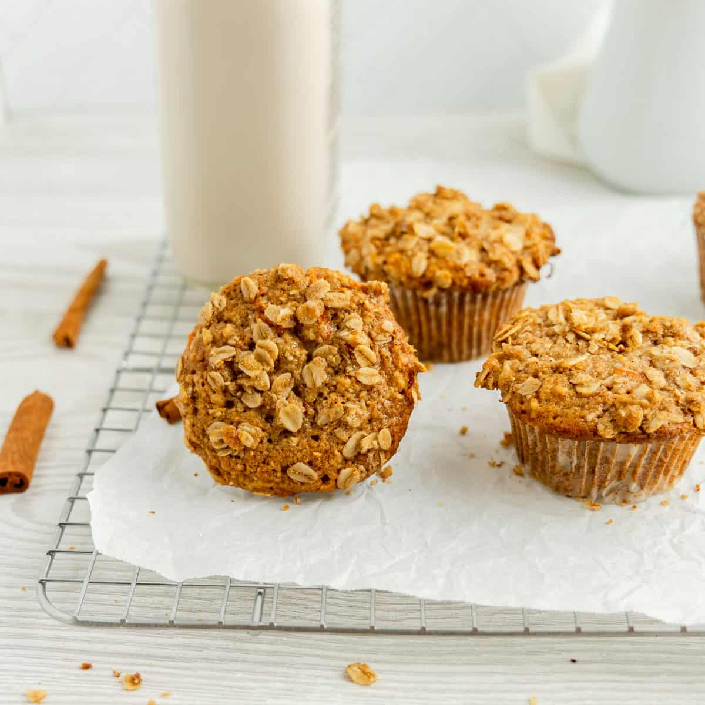
Apple and Carrot Muffins
Age: 1-3 years
Ingredients:
½ cup grated apple
½ cup grated carrot
¼ cup whole wheat flour
1 egg
1 tablespoon olive oil or melted butter
1 teaspoon baking powder
A pinch of cinnamon
Process:
HPreheat the oven to 350°F (175°C).
In a bowl, mix the grated apple, carrot, flour, baking powder, and cinnamon.
Add the egg and oil, and mix until combined.
Pour the batter into mini muffin tins and bake for 15-20 minutes.
Nutritional Benefits:
Apples: Fiber and Vitamin C.
Carrots: Vitamin A and antioxidants.
Whole Wheat Flour: Fiber and iron.
Mashed Lentils with Rice
Age: 1-3 years
Ingredients:
¼ cup red lentils
¼ cup rice
1 small tomato (chopped)
A pinch of turmeric
1 teaspoon ghee
Process:
Rinse the lentils and rice.
In a pot, add lentils, rice, turmeric, tomato, and 1 cup of water.
Cook on low heat until soft (about 20-25 minutes).
Mash the mixture and add ghee before serving.
Nutritional Benefits:
Lentils: Protein, iron, and fiber.
Rice: Carbohydrates and B-vitamins.
Tomatoes: Vitamin C and antioxidants.
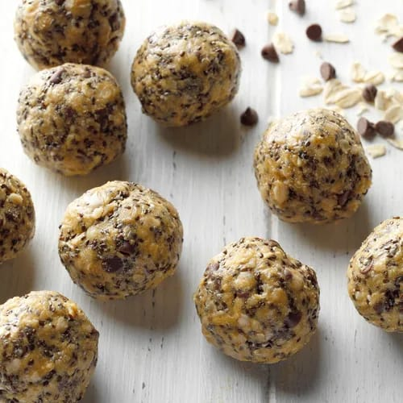
Protein Balls
Age: 4-6 years
Ingredients:
1-1/2 cups quick-cooking oats
1/2 cup chia seeds
1/2 cup honey or maple syrup
1/2 cup creamy peanut butter
1/4 cup vanilla or chocolate protein powder
1/4 cup miniature semisweet chocolate chips
Process:
In a large bowl, combine all ingredients.
Refrigerate 1 hour or until firm enough to roll.
Shape into 1-1/2-in. balls.
Store in the refrigerator.
Nutritional Benefits:
1 piece: 82 calories
4g fat (1g saturated fat)
0 cholesterol
23mg sodium
11g carbohydrate (6g sugars, 2g fiber)
2g protein.
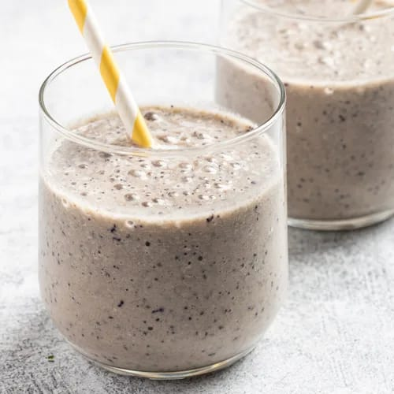
Blueberry Banana Smoothie
Age: 4-6 years
Ingredients:
1 cup unsweetened almond milk
1 medium banana
1/2 cup frozen unsweetened blueberries
1/4 cup instant plain oatmeal
1 teaspoon maple syrup
1/2 teaspoon ground cinnamon
Dash sea salt
Process:
Place the first 6 ingredients in a blender
cover and process until smooth
Pour into 2 chilled glasses
sprinkle with sea salt.
Serve immediately.
Nutritional Benefits:
1 cup: 153 calories
3g fat (0 saturated fat)
0 cholesterol
191mg sodium
31g carbohydrate (13g sugars, 5g fiber)
3g protein.
Diabetic exchanges: 2 starch.
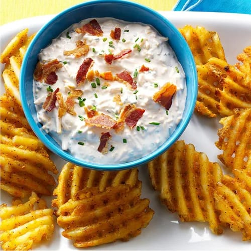
Loaded Baked Potato Dip
Age: 4-6 years
Ingredients:
2 cups reduced-fat sour cream
2 cups shredded reduced-fat cheddar cheese
8 center-cut bacon or turkey bacon strips, chopped and cooked
1/3 cup minced fresh chives
2 teaspoons Louisiana-style hot sauce
Hot cooked waffle-cut fries
Process:
In a small bowl mix
the first 5 ingredients until blended;
refrigerate until serving.
Serve with waffle fries.
Nutritional Benefits:
1/4 cup (calculated without fries): 149 calories
10g fat (6g saturated fat),
38mg cholesterol,
260mg sodium,
4g carbohydrate (4g sugars, 0 fiber),
11g protein.
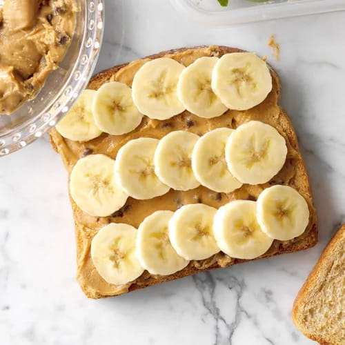
peanut bread
Age: 4-6 years
Ingredients:
1/4 cup creamy peanut butter
2 tablespoons honey
1/4 teaspoon ground cinnamon
2 tablespoons miniature semisweet chocolate chips
4 slices whole wheat bread
1 medium banana, thinly sliced
Process:
Mix peanut butter
honey and cinnamon;
stir in chocolate chips.
Spread over bread.
Layer 2 bread slices with banana slices;
top with remaining bread.
If desired, cut into shapes using cookie cutters.
Nutritional Benefits:
sandwich: 502 calories,
22g fat (6g saturated fat),
0 cholesterol,
394mg sodium,
69g carbohydrate (36g sugars, 7g fiber),
15g protein.
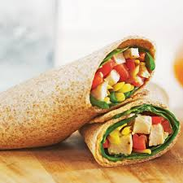
Chicken and Veggie Wrap
Age: 4-6 years
Ingredients:
1 whole wheat tortilla
1/4 cup cooked shredded chicken
1/4 cup grated cucumber
1 tbsp hummus
Process:
Spread hummus on the tortilla
Add chicken and cucumber
Roll up the tortilla and serve
Nutritional Benefits:
Chicken is a good source of lean protein
Cucumber provides hydration and fiber
Whole wheat tortilla adds fiber for digestion
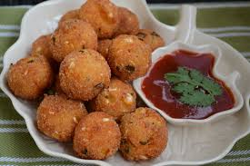
Sweet Corn and Cheese Balls
Age: 4-6 years
Ingredients:
1/2 cup boiled sweet corn
1/4 cup grated cheese
2 tbsp breadcrumbs
Salt and pepper to taste
Oil for shallow frying
Process:
Mash sweet corn and mix with cheese, breadcrumbs, salt, and pepper
Form small balls from the mixture
Shallow fry until golden brown
Nutritional Benefits:
Corn provides fiber and vitamins
Cheese adds protein and calcium
Breadcrumbs offer carbohydrates for energy
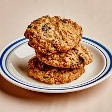
Oatmeal Cookies
Age: 4-6 years
Ingredients:
1/2 cup oats
1/4 cup mashed banana
1 tbsp honey
1/4 tsp cinnamon
Process:
Preheat the oven to 180°C (350°F)
Mix all ingredients to form a dough
Shape into cookies and bake for 12-15 minutes
Nutritional Benefits:
Oats are a great source of fiber
Bananas provide natural sweetness and potassium
Honey adds antioxidants
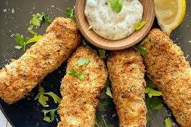
Baked Fish Sticks
Age: 4-6 years
Ingredients:
1/2 cup fish fillets
1/4 cup breadcrumbs
1 tbsp grated Parmesan
1 tsp olive oil
Process:
Coat the fish with breadcrumbs and Parmesan
Bake at 200°C (400°F) for 15 minutes
Nutritional Benefits:
Fish provides omega-3 fatty acids for brain health
Breadcrumbs add fiber
Parmesan provides protein and calcium
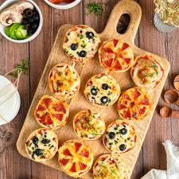
Mini Pizza Bagels
Age: 4-6 years
Ingredients:
2 mini whole wheat bagels
1/4 cup pizza sauce
1/4 cup shredded mozzarella cheese
1/4 cup diced bell peppers and tomatoes
Process:
Preheat the oven to 180°C (350°F)
Spread pizza sauce on the bagel halves
Add cheese, bell peppers, and tomatoes
Bake for 8-10 minutes until cheese melts
Nutritional Benefits:
Whole wheat bagels provide complex carbohydrates
Bell peppers and tomatoes are rich in vitamin C
Cheese provides calcium for growing bones
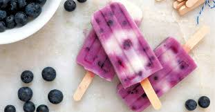
Blueberry Yogurt Popsicles
Age: 4-6 years
Ingredients:
1/2 cup blueberries
1/2 cup plain yogurt
1 tbsp honey
Process:
Blend blueberries, yogurt, and honey
Pour into popsicle molds and freeze for 4 hours
Nutritional Benefits:
Blueberries are rich in antioxidants
Yogurt contains calcium and probiotics
Honey adds natural sweetness

Tuna Salad Sandwich
Age: 7-10 years
Ingredients:
2 slices whole wheat bread
1/2 can tuna in water, drained
1 tbsp mayonnaise
1/4 cup grated carrots
Lettuce leaves
Process:
Mix tuna, mayonnaise, and grated carrots
Spread the mixture on one slice of bread
Add lettuce and top with the second slice
Nutritional Benefits:
Tuna is rich in omega-3 fatty acids and protein
Carrots provide vitamin A for eye health
Whole wheat bread adds fiber for digestion
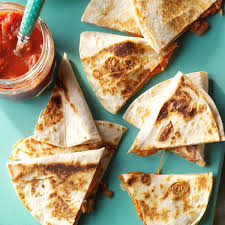
Cheesy Quesadilla
Age: 7-10 years
Ingredients:
2 whole wheat tortillas
1/2 cup shredded cheddar cheese
1/4 cup chopped bell peppers
1/4 cup chopped onions
1 tbsp butter
Optional toppings: sour cream, salsa, or guacamole
Process:
Heat a pan over medium heat and add a little butter
Place one tortilla in the pan
Sprinkle cheese evenly across the tortilla
Add chopped bell peppers and onions on top of the cheese
Place the second tortilla on top to form a sandwich
Cook for 2-3 minutes until the bottom tortilla is golden brown
Carefully flip the quesadilla and cook for another 2-3 minutes
Remove from the pan, slice into wedges, and serve with your favorite toppings
Nutritional Benefits:
Cheddar Cheese: High in calcium and protein, essential for growing bones and muscle development
Bell Peppers: Rich in vitamins A and C, contributing to a strong immune system and good vision
Whole Wheat Tortilla: Provides fiber and complex carbohydrates, supporting digestion and long-lasting energy
Onions: Offer antioxidants and help improve immune health
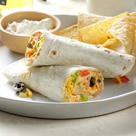
Quick Taco Wraps
Age: 7-10 years
Ingredients:
2 whole wheat tortillas
1/2 cup cooked ground chicken or beef
1/4 cup shredded lettuce
1/4 cup diced tomatoes
1/4 cup shredded cheese
2 tbsp sour cream or salsa (optional)
Process:
Warm the tortillas in a pan for 30 seconds
Spread the cooked ground meat evenly on the tortillas
Add lettuce, tomatoes, and cheese on top
Drizzle with sour cream or salsa
Fold the tortilla and serve immediately
Nutritional Benefits:
Chicken/Beef: Provides protein for muscle development
Lettuce & Tomatoes: Rich in vitamins and fiber for good digestion
Cheese: Offers calcium and protein for bone health
Whole Wheat Tortilla: Adds fiber and helps maintain energy levels
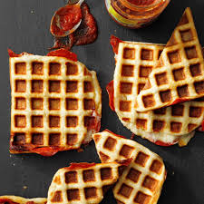
Waffle Iron Pizzas
Age: 7-10 years
Ingredients:
1 cup pizza dough
1/4 cup pizza sauce
1/2 cup shredded mozzarella cheese
1/4 cup pepperoni or veggies (optional)
1 tbsp olive oil
Process:
Preheat the waffle iron and lightly brush it with olive oil
Roll out pizza dough into small rounds that fit the waffle iron
Place a dough round on the waffle iron, add pizza sauce, cheese, and toppings
Cover with another dough round
Close the waffle iron and cook for 3-5 minutes until golden and crispy
Nutritional Benefits:
Pizza Dough: Provides carbohydrates for energy
Mozzarella Cheese: High in calcium and protein for bone and muscle health
Tomato Sauce: Rich in antioxidants like lycopene, good for heart health
Olive Oil: Contains healthy fats that support heart health
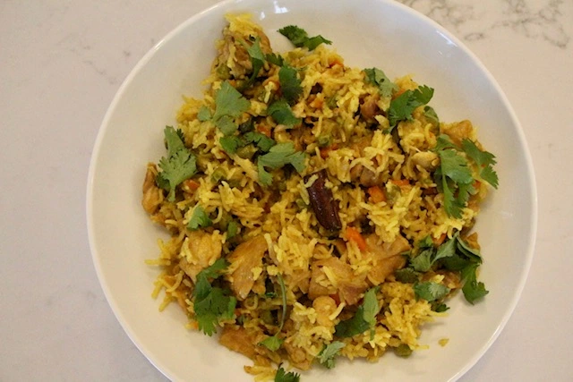
Biryani
Age: 7-10 years
Ingredients:
1 cup basmati rice
1/2 cup diced chicken or vegetables (carrots, peas)
1/4 cup chopped onions
1/4 tsp turmeric powder
1/2 tsp cumin seeds
1/4 tsp garam masala
1/2 tsp ginger-garlic paste
1 tbsp ghee or oil
Salt to taste
Fresh coriander for garnish
Process:
Wash and soak the rice for 20 minutes
Heat ghee in a pan, add cumin seeds, onions, and ginger-garlic paste
Sauté until onions turn golden
Add chicken or vegetables, turmeric, garam masala, and salt
Cook for 5 minutes, then add soaked rice and 2 cups of water
Cover and cook on low heat for 15-20 minutes until rice is fluffy
Garnish with fresh coriander and serve
Nutritional Benefits:
Basmati Rice: Provides energy through carbohydrates
Chicken/Vegetables: Rich in protein and essential vitamins
Turmeric: Contains anti-inflammatory properties
Ghee: Adds healthy fats for growth and development
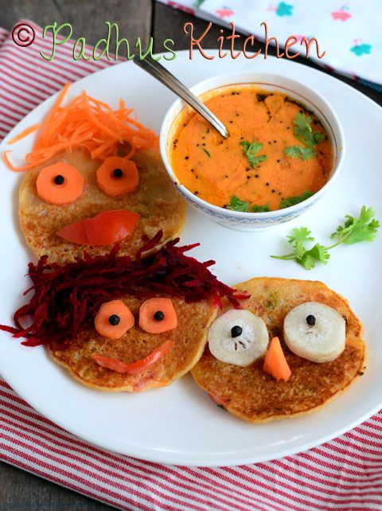
Dosa
Age: 7-10 years
Ingredients:
1 cup dosa batter (store-bought or homemade)
1/4 cup finely chopped carrots
1/4 cup finely chopped spinach
1 tbsp ghee or oil
Salt to taste (optional)
Process:
Heat a non-stick pan and grease it lightly with ghee
Pour a ladleful of dosa batter and spread it thin
Sprinkle chopped carrots and spinach over the dosa
Cook until crispy on one side, then fold and remove from the pan
Serve with chutney or yogurt
Nutritional Benefits:
Dosa Batter: Made from rice and lentils, offering protein and carbs
Carrots: Provide vitamins A and fiber
Spinach: Rich in iron and vitamins
Ghee: Adds healthy fats for energy and brain development
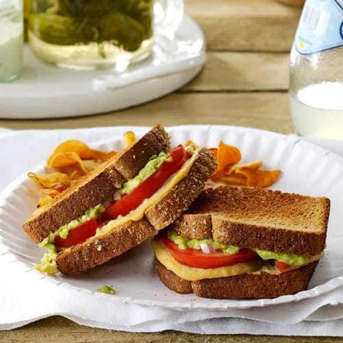
Tomato & Avocado Sandwiches
Age: 7-10 years
Ingredients:
1/2 medium ripe avocado, peeled and mashed
4 slices whole wheat bread, toasted
1 medium tomato, sliced
2 tablespoons finely chopped shallot
1/4 cup hummus
Process:
Spread avocado over 2 slices of toast.
Top with tomato and shallot.
Spread hummus over remaining toast slices;
place on top of avocado toast,
facedown on top of tomato layer.
Nutritional Benefits:
sandwich: 278 calories,
11g fat (2g saturated fat),
0 cholesterol,
379mg sodium,
35g carbohydrate (6g sugars, 9g fiber),
11g protein.
Diabetic Exchanges: 2 starch, 2 fat.
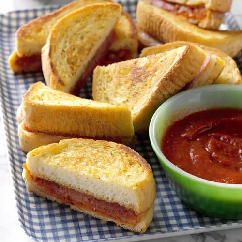
Garlic Bread Pizza Sandwiches
Age: 7-10 years
Ingredients:
1 package (11-1/4 ounces) frozen garlic Texas toast
1/4 cup pasta sauce
4 slices provolone cheese
16 slices pepperoni
8 slices thinly sliced hard salami
Additional pasta sauce, warmed, optional
Preheat griddle over medium-low heat.
Add garlic toast; cook until lightly browned,
3-4 minutes per side.
Spoon 1 tablespoon sauce over each of 4 pieces of toast.
Top with cheese, pepperoni, salami and remaining toast.
Cook until crisp and cheese is melted, 3-5 minutes,
turning as necessary. If desired, serve with additional sauce.
Nutritional Benefits:
1 sandwich: 456 calories,
28g fat (10g saturated fat),
50mg cholesterol,
1177mg sodium,
36g carbohydrate (4g sugars, 2g fiber),
19g protein.
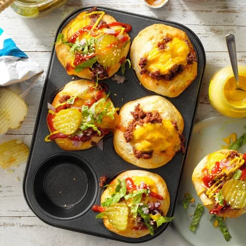
Cheeseburger Cups
Age: 7-10 years
Ingredients:
1 pound ground beef
1/2 cup ketchup
2 tablespoons brown sugar
1 tablespoon prepared mustard
1-1/2 teaspoons Worcestershire sauce
2 tubes (10-1/2 ounces each) large refrigerated buttermilk biscuits
1/2 cup cubed Velveeta
Process:
In a large skillet, cook beef over medium heat until no longer pink,
breaking it into crumbles; drain.
Stir in the ketchup, brown sugar,
mustard and Worcestershire sauce.
Remove from the heat.
Press each biscuit onto the bottom and up the side of a greased muffin cup.
Spoon beef mixture into cups; top with cheese cubes.
Bake at 400° until cups are golden brown,
14-16 minutes.
Nutritional Benefits:
1 cheeseburger cup: 299 calories,
14g fat (5g saturated fat),
34mg cholesterol,
910mg sodium,
32g carbohydrate (9g sugars, 1g fiber),
13g protein.
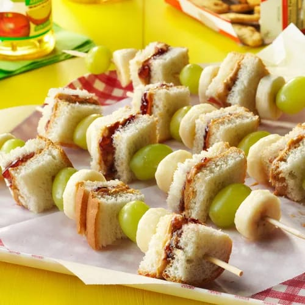
PBJ on a Stick
Age: 7-10 years
Ingredients:
2 peanut butter and jelly sandwiches
1 cup seedless red or green grapes
1 small banana, sliced
4 wooden skewers (5 to 6 inches)
Process:
Cut sandwiches into 1-in. squares.
Alternately thread grapes,
sandwich squares and banana slices onto each skewer.
Serve immediately.
Nutritional Benefits:
2 skewers: 415 calories,
14g fat (3g saturated fat),
0 cholesterol,
368mg sodium,
63g carbohydrate (30g sugars, 7g fiber),
13g protein.